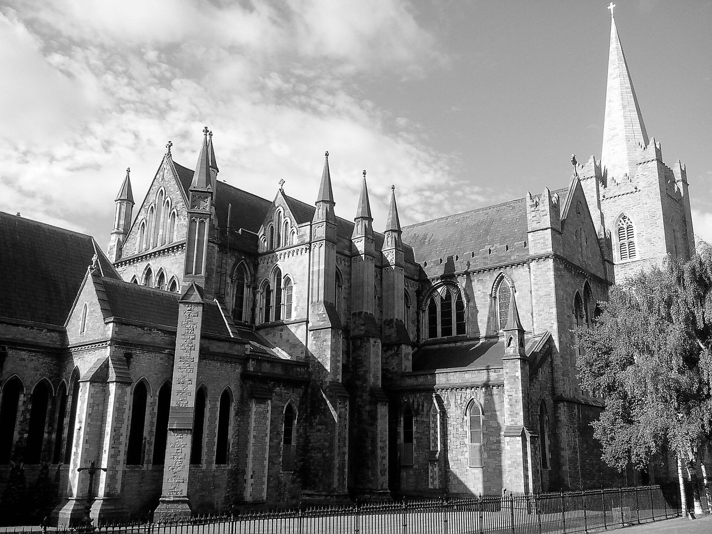
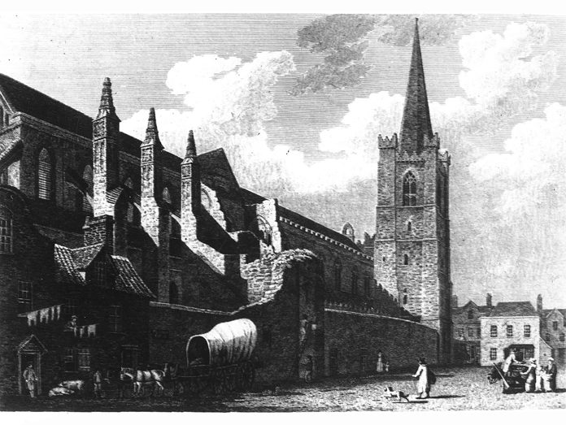
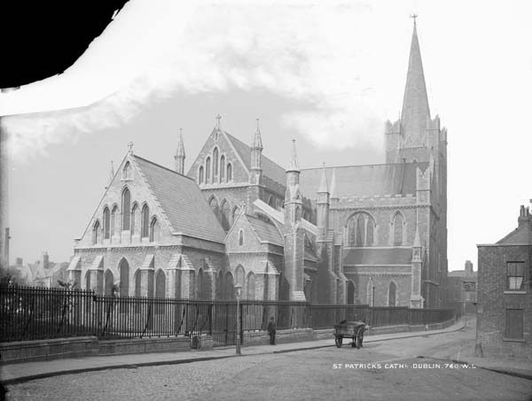
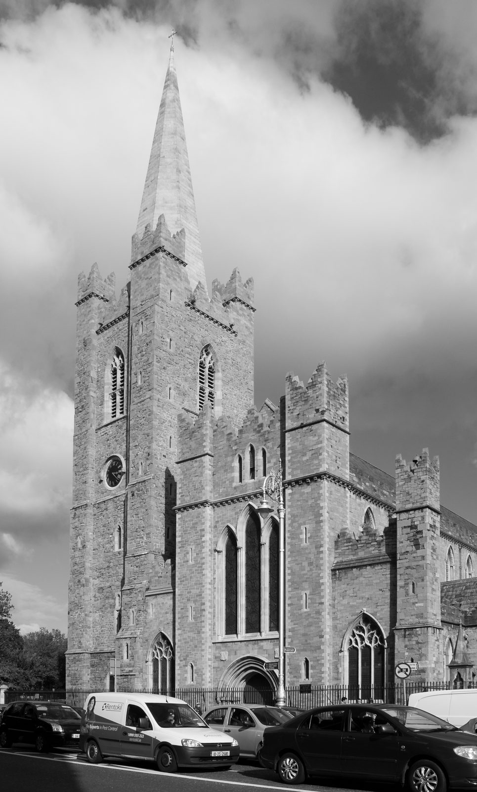
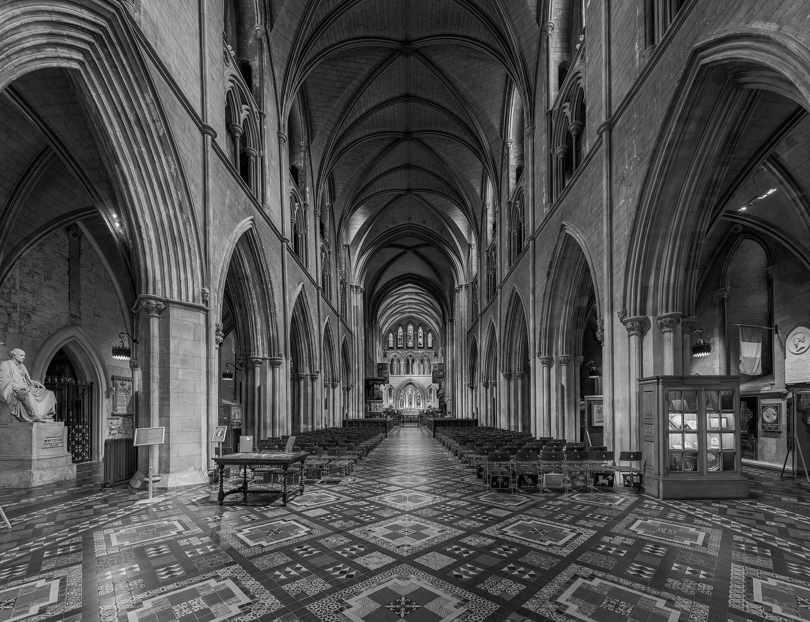
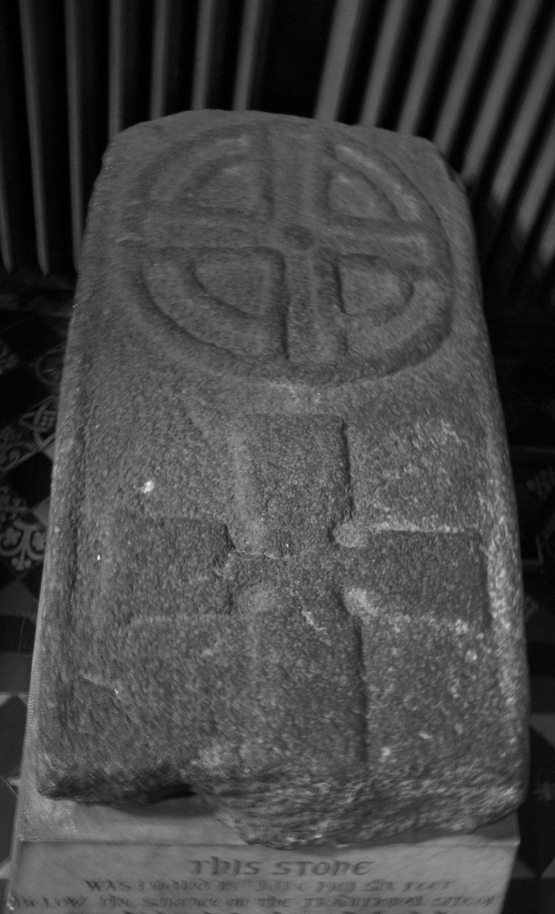
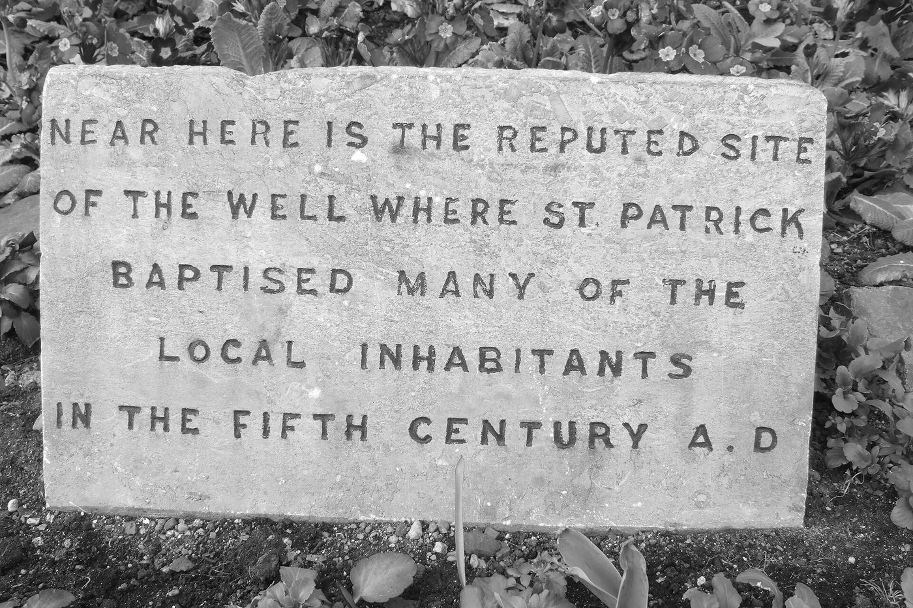
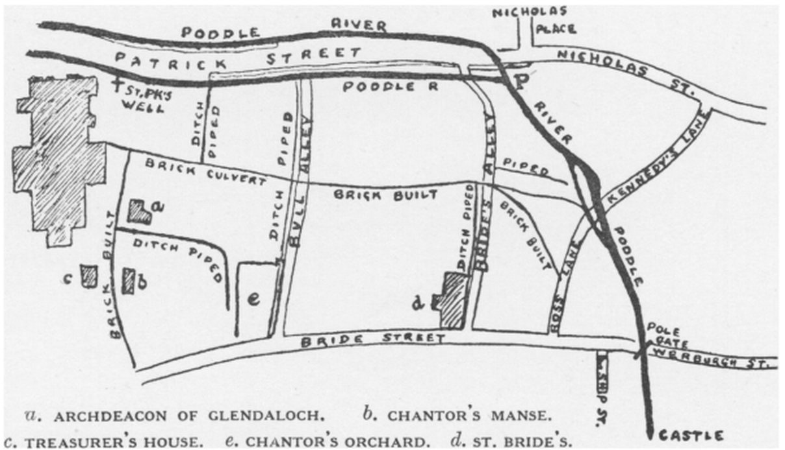

Stop 12 of 16 · Blackpitts and the Liberties
St Patrick’s Cathedral
Built between two streams, and flooded by them for centuries.
Through the Liberties
North of the Grand Canal, the culverted river runs along Clanbrassil Street, past Donore Avenue, Warrenmount and Blackpitts. Blackpitts, a name on maps by 1728, probably comes from the pits used by tanners along the river, and Mill Street, first mentioned in 1711, recalls a double mill for oil and flour that is linked to St Thomas’s Abbey. In 1830 the street had several tanners and a fancy weaver; by 1880 it had five tanners and a parchment maker. During a great fire on 22 June 1875, burning whiskey ran into the Poddle beneath Ardee Street and set the river alight.
Near New Row it picks up its ancient course again, and at the junction of New Street, Patrick Street and Kevin Street, the old Cross Poddle, a medieval mill stood on its bank beside St Nicholas’ Bridge, outside St Nicholas’ Gate. At Fumbally Lane it is joined by the Tenter Water, a branch of the City Watercourse, and at the corner of the Coombe and Patrick Street by its one real tributary, the Commons Water, which rises in Crumlin.
Between two streams
Near Patrick Street the Poddle once ran in two channels, one on each side of the street, joining again near Bride’s Alley before turning east towards the Castle. The first church of St Patrick stood on the island of dry ground between them, which is why the Normans called it St Patrick’s “in insula”, on the island. It was a holy site and a very wet one.
Tradition says that St Patrick baptised converts at a well here in the fifth century. The first record of a church on the site is from 890. The cathedral’s own account says that in 1901, during building works beside it, six carved grave slabs were found, and one of them was lying over what looked like an old well; other accounts date the find to the middle of the 19th century. The carving is dated to around the tenth century. The cathedral describes this as possibly, not certainly, the well of the story. The stone is now kept inside the cathedral, and a plaque in the park marks the reputed site of the well.
A cathedral on wet ground
John Comyn, the first Norman archbishop of Dublin, made the little church collegiate in 1191, with a body of clergy for worship and learning, and dedicated it on 17 March that year. His successor, Henry de Loundres, raised it to a cathedral; most accounts date this to about 1212 or 1213, and in 1220 he created the office of dean. The great stone church we see was built in the following decades, between about 1220 and 1270 by most counts, with the Lady Chapel added around 1270.
Building on an island in a river had a lasting cost. In the 20th century the water table was found to be within about 2.3 metres (seven and a half feet) of the floor, which is why the cathedral has never had a crypt, unlike Christ Church a few hundred metres away on its ridge above the Liffey.
Ditches, pipes and culverts
A Dublin Corporation map reproduced by Rev. Myles Ronan in 1927 shows how the water around the cathedral was gradually tamed. The two arms of the Poddle run along Patrick Street, with St Patrick’s Well marked beside the cathedral. Between the cathedral and Bride Street, the old open ditches between Bull Alley, Bride’s Alley and Ross Lane are marked “ditch piped” and “brick built”, with a brick culvert running across to the river. The canons’ houses and gardens, the Chantor’s Manse, the Treasurer’s House and the Chantor’s Orchard, sat in the middle of this network of drains.
Out of sight
By the 1860s the river had become an open sewer, blamed for disease as well as flooding, and its lower reaches were roofed over. Under Charles II a Poddle Commission had been set up to manage it, with power to levy a Poddle tax; its powers passed to the Paving Commissioners in 1840. Patrick Street got its brick culvert in the 1920s.
The Guinness family changed the area twice. Benjamin Lee Guinness paid for the great restoration of the cathedral in 1860 to 1865, when it was feared the building might collapse. In 1901 his grandson Edward Guinness, Lord Iveagh, cleared the crowded houses to the north and laid out St Patrick’s Park, and it was during that work that the old slab and well were found.
What to see
Stand in St Patrick’s Park and you are standing roughly on the island between the two old streams. The Poddle still runs beneath Patrick Street, along the west side of the park, in its culvert on the way to the Castle. Inside the cathedral, look for the old well slab, and notice that there are no steps down: the floor is as low as the water will allow.
Watch and read
From the planning file
Facts from the flood scheme’s planning application and four local planning files.







